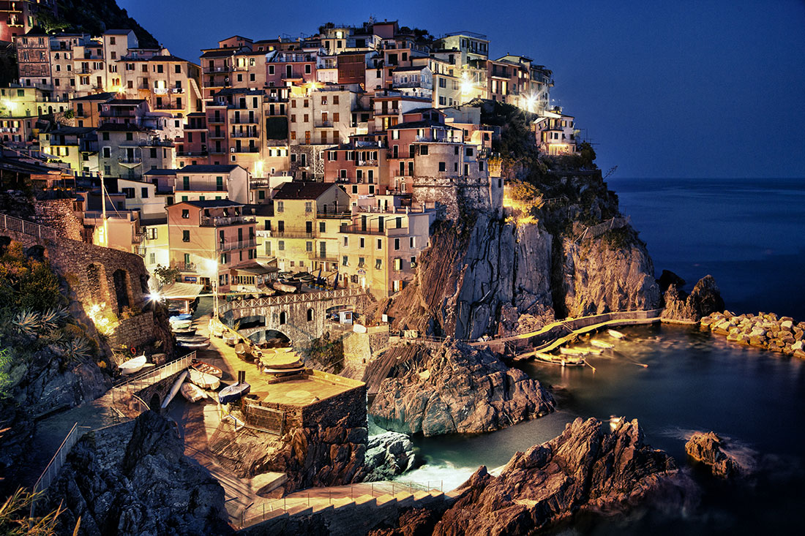

Romance Languages and Literatures
People
Programs
French
Italian
Undergraduate
Major in Italian
Minor
Honors
Study Abroad
Our Students
Courses
Spanish
Study Abroad
Research Groups
Notables
Events
Home
/
Italian
Italian
Welcome to the program in Italian at Washington University! The study of Italian will take you to:
Roma, caput mundi.
Italy's central role in Western history, literature, and culture.
Firenze, la culla del Rinascimento.
Cross-disciplinary perspectives.
La bella Napoli.
From pizza to public service, Italian, and your career.
